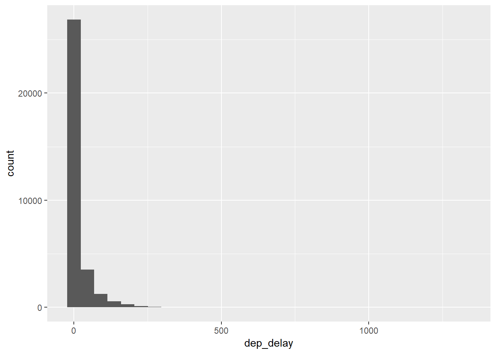
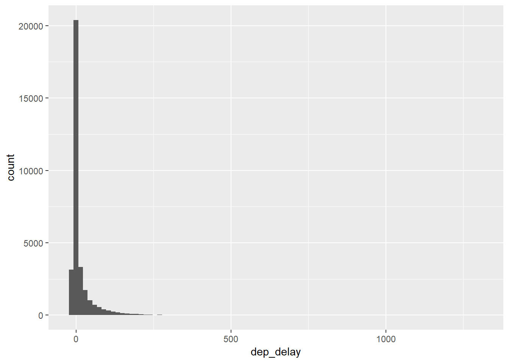
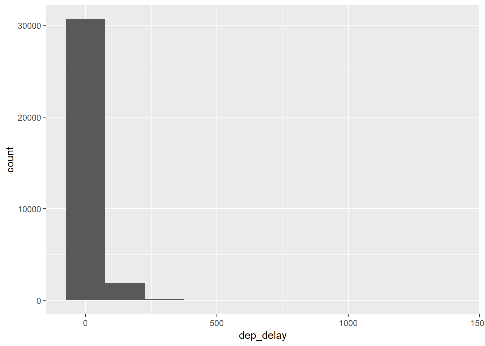
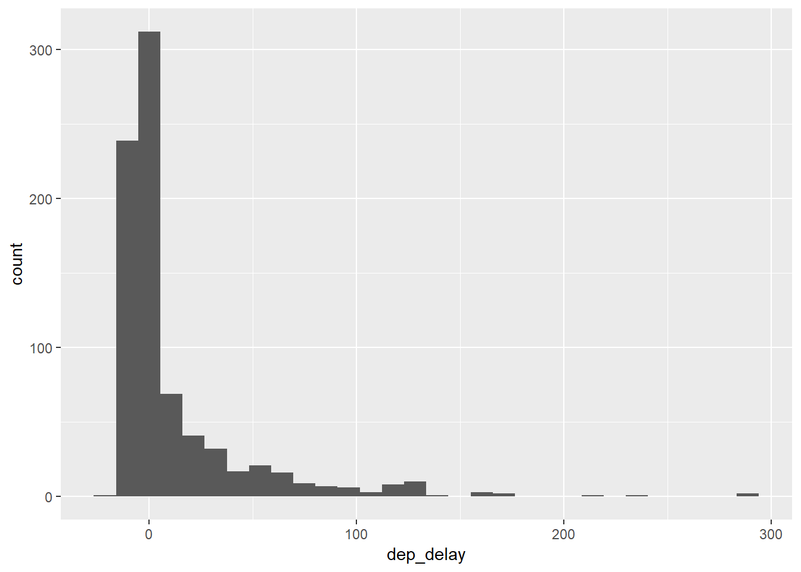
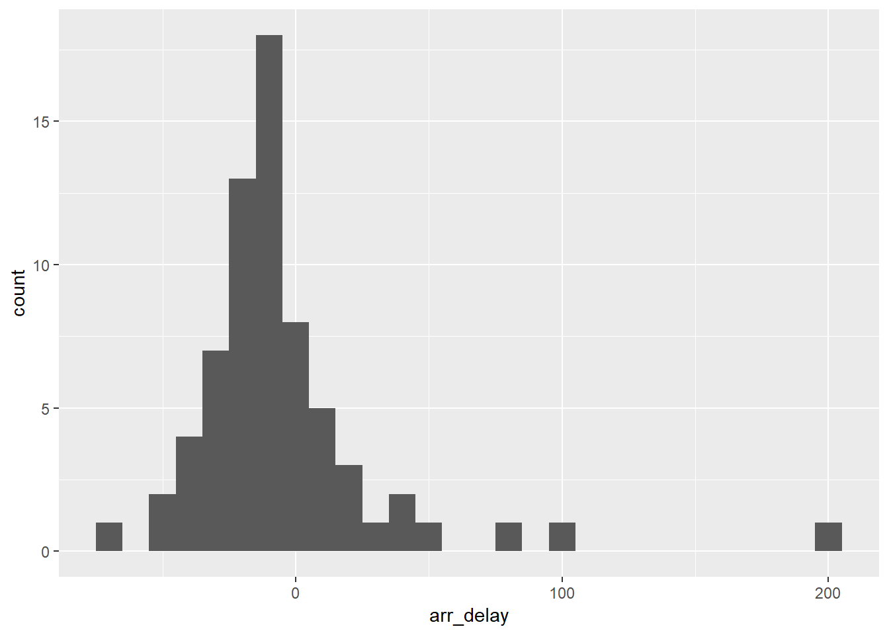
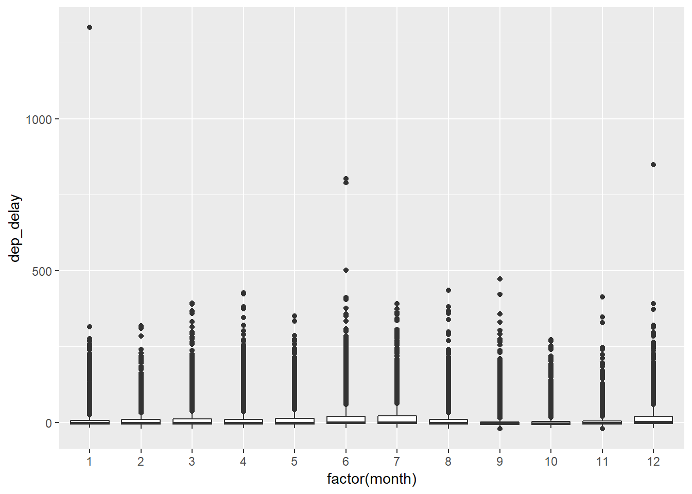
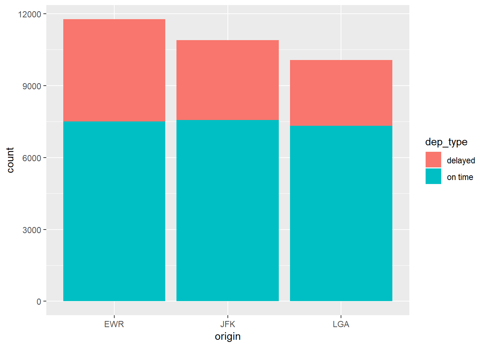
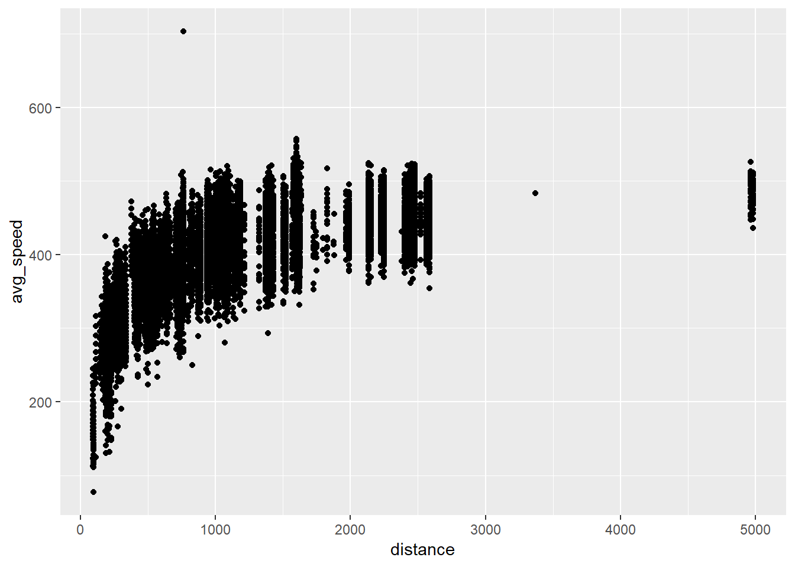

Week 2
Complete all Exercises, and submit answers to Questions on the Coursera platform.
Some define statistics as the field that focuses on turning information into knowledge. The first step in that process is to summarize and describe the raw information - the data. In this lab we explore flights, specifically a random sample of domestic flights that departed from the three major New York City airport in 2013. We will generate simple graphical and numerical summaries of data on these flights and explore delay times. As this is a large data set, along the way you’ll also learn the indispensable skills of data processing and subsetting.
0.6 Getting started
0.6.1 Load packages
In this lab we will explore the data using the dplyr package and visualize it using the ggplot2 package for data visualization. The data can be found in the companion package for this course, statsr.
Let’s load the packages.
library(statsr)
library(dplyr)
library(ggplot2)0.6.2 Data
The Bureau of Transportation Statistics (BTS) is a statistical agency that is a part of the Research and Innovative Technology Administration (RITA). As its name implies, BTS collects and makes available transportation data, such as the flights data we will be working with in this lab.
We begin by loading the nycflights data frame. Type the following in your console to load the data:
data(nycflights)The data frame containing 32735 flights that shows up in your workspace is a data matrix, with each row representing an observation and each column representing a variable. R calls this data format a data frame, which is a term that will be used throughout the labs.
To view the names of the variables, type the command
names(nycflights)## [1] "year" "month" "day" "dep_time" "dep_delay"
## [6] "arr_time" "arr_delay" "carrier" "tailnum" "flight"
## [11] "origin" "dest" "air_time" "distance" "hour"
## [16] "minute"This returns the names of the variables in this data frame. The codebook (description of the variables) is included below. This information can also be found in the help file for the data frame which can be accessed by typing ?nycflights in the console.
year,month,day: Date of departuredep_time,arr_time: Departure and arrival times, local timezone.dep_delay,arr_delay: Departure and arrival delays, in minutes. Negative times represent early departures/arrivals.carrier: Two letter carrier abbreviation.9E: Endeavor Air Inc.AA: American Airlines Inc.AS: Alaska Airlines Inc.B6: JetBlue AirwaysDL: Delta Air Lines Inc.EV: ExpressJet Airlines Inc.F9: Frontier Airlines Inc.FL: AirTran Airways CorporationHA: Hawaiian Airlines Inc.MQ: Envoy AirOO: SkyWest Airlines Inc.UA: United Air Lines Inc.US: US Airways Inc.VX: Virgin AmericaWN: Southwest Airlines Co.YV: Mesa Airlines Inc.
tailnum: Plane tail numberflight: Flight numberorigin,dest: Airport codes for origin and destination. (Google can help you with what code stands for which airport.)air_time: Amount of time spent in the air, in minutes.distance: Distance flown, in miles.hour,minute: Time of departure broken in to hour and minutes.
A very useful function for taking a quick peek at your data frame, and viewing its dimensions and data types is str, which stands for structure.
str(nycflights)## Classes 'tbl_df' and 'data.frame': 32735 obs. of 16 variables:
## $ year : int 2013 2013 2013 2013 2013 2013 2013 2013 2013 2013 ...
## $ month : int 6 5 12 5 7 1 12 8 9 4 ...
## $ day : int 30 7 8 14 21 1 9 13 26 30 ...
## $ dep_time : int 940 1657 859 1841 1102 1817 1259 1920 725 1323 ...
## $ dep_delay: num 15 -3 -1 -4 -3 -3 14 85 -10 62 ...
## $ arr_time : int 1216 2104 1238 2122 1230 2008 1617 2032 1027 1549 ...
## $ arr_delay: num -4 10 11 -34 -8 3 22 71 -8 60 ...
## $ carrier : chr "VX" "DL" "DL" "DL" ...
## $ tailnum : chr "N626VA" "N3760C" "N712TW" "N914DL" ...
## $ flight : int 407 329 422 2391 3652 353 1428 1407 2279 4162 ...
## $ origin : chr "JFK" "JFK" "JFK" "JFK" ...
## $ dest : chr "LAX" "SJU" "LAX" "TPA" ...
## $ air_time : num 313 216 376 135 50 138 240 48 148 110 ...
## $ distance : num 2475 1598 2475 1005 296 ...
## $ hour : num 9 16 8 18 11 18 12 19 7 13 ...
## $ minute : num 40 57 59 41 2 17 59 20 25 23 ...The nycflights data frame is a massive trove of information. Let’s think about some questions we might want to answer with these data:
- We might want to find out how delayed flights headed to a particular destination tend to be.
- We might want to evaluate how departure delays vary over months.
- Or we might want to determine which of the three major NYC airports has a better on time percentage for departing flights.
0.6.3 Seven verbs
The dplyr package offers seven verbs (functions) for basic data manipulation:
filter()arrange()select()distinct()mutate()summarise()sample_n()
We will use some of these functions in this lab, and learn about others in a future lab.
0.7 Analysis
0.7.1 Departure delays in flights to Raleigh-Durham (RDU)
We can examine the distribution of departure delays of all flights with a histogram.
ggplot(data = nycflights, aes(x = dep_delay)) +
geom_histogram()## `stat_bin()` using `bins = 30`. Pick better value with `binwidth`.
This function says to plot the dep_delay variable from the nycflights data frame on the x-axis. It also defines a geom (short for geometric object), which describes the type of plot you will produce.
Histograms are generally a very good way to see the shape of a single distribution, but that shape can change depending on how the data is split between the different bins. You can easily define the binwidth you want to use:
ggplot(data = nycflights, aes(x = dep_delay)) +
geom_histogram(binwidth = 15)
ggplot(data = nycflights, aes(x = dep_delay)) +
geom_histogram(binwidth = 150)
Exercise: How do these three histograms with the various binwidths compare?
If we want to focus on departure delays of flights headed to RDU only, we need to first filter the data for flights headed to RDU (dest == "RDU") and then make a histogram of only departure delays of only those flights.
rdu_flights <- nycflights %>%
filter(dest == "RDU")
ggplot(data = rdu_flights, aes(x = dep_delay)) +
geom_histogram()## `stat_bin()` using `bins = 30`. Pick better value with `binwidth`.
Let’s decipher these three lines of code:
- Line 1: Take the
nycflightsdata frame,filterfor flights headed to RDU, and save the result as a new data frame calledrdu_flights.==means “if it’s equal to”.RDUis in quotation marks since it is a character string.
- Line 2: Basically the same
ggplotcall from earlier for making a histogram, except that it uses the data frame for flights headed to RDU instead of all flights.
Logical operators: Filtering for certain observations (e.g. flights from a particular airport) is often of interest in data frames where we might want to examine observations with certain characteristics separately from the rest of the data. To do so we use the filter function and a series of logical operators. The most commonly used logical operators for data analysis are as follows:
==means “equal to”!=means “not equal to”>or<means “greater than” or “less than”>=or<=means “greater than or equal to” or “less than or equal to”
We can also obtain numerical summaries for these flights:
rdu_flights %>%
summarise(mean_dd = mean(dep_delay), sd_dd = sd(dep_delay), n = n())## # A tibble: 1 x 3
## mean_dd sd_dd n
## <dbl> <dbl> <int>
## 1 11.7 35.6 801Note that in the summarise function we created a list of two elements. The names of these elements are user defined, like mean_dd, sd_dd, n, and you could customize these names as you like (just don’t use spaces in your names). Calculating these summary statistics also require that you know the function calls. Note that n() reports the sample size.
Summary statistics: Some useful function calls for summary statistics for a single numerical variable are as follows:
meanmediansdvarIQRrangeminmax
We can also filter based on multiple criteria. Suppose we are interested in flights headed to San Francisco (SFO) in February:
sfo_feb_flights <- nycflights %>%
filter(dest == "SFO", month == 2)Note that we can separate the conditions using commas if we want flights that are both headed to SFO and in February. If we are interested in either flights headed to SFO or in February we can use the | instead of the comma.
- Create a new data frame that includes flights headed to SFO in February, and save this data frame as
sfo_feb_flights. How many flights meet these criteria?- 68
- 1345
- 2286
- 3563
- 32735
# type your code for Question 1 here, and Knit
sfo_feb_flights <- nycflights %>%
filter(dest == "SFO", month == 2)
sfo_feb_flights %>%
summarise(n = n())## # A tibble: 1 x 1
## n
## <int>
## 1 68- Make a histogram and calculate appropriate summary statistics for arrival delays of
sfo_feb_flights. Which of the following is false?- The distribution is unimodal.
- The distribution is right skewed.
- No flight is delayed more than 2 hours.
- The distribution has several extreme values on the right side.
- More than 50% of flights arrive on time or earlier than scheduled.
# type your code for Question 2 here, and Knit
#
ggplot(data = sfo_feb_flights, aes(x = arr_delay)) +
geom_histogram(binwidth = 10)
sfo_feb_flights %>%
summarise(sd_ad = sd(arr_delay), var_ad = var(arr_delay), iqr_ad = IQR(arr_delay), median_ad = median(arr_delay), min_ad = min(arr_delay), max_ad = max(arr_delay))## # A tibble: 1 x 6
## sd_ad var_ad iqr_ad median_ad min_ad max_ad
## <dbl> <dbl> <dbl> <dbl> <dbl> <dbl>
## 1 36.3 1316. 23.2 -11 -66 196sfo_feb_flights_ear <- sfo_feb_flights %>%
filter(arr_delay <= 0)
sfo_feb_flights_ear %>%
summarise(n = n())## # A tibble: 1 x 1
## n
## <int>
## 1 49Another useful functionality is being able to quickly calculate summary statistics for various groups in your data frame. For example, we can modify the above command using the group_by function to get the same summary stats for each origin airport:
rdu_flights %>%
group_by(origin) %>%
summarise(mean_dd = mean(dep_delay), sd_dd = sd(dep_delay), n = n())## # A tibble: 3 x 4
## origin mean_dd sd_dd n
## <chr> <dbl> <dbl> <int>
## 1 EWR 13.4 32.1 145
## 2 JFK 15.4 40.3 300
## 3 LGA 7.90 32.2 356Here, we first grouped the data by origin, and then calculated the summary statistics.
- Calculate the median and interquartile range for
arr_delays of flights in thesfo_feb_flightsdata frame, grouped by carrier. Which carrier has the hights IQR of arrival delays?- American Airlines
- JetBlue Airways
- Virgin America
- Delta and United Airlines
- Frontier Airlines
# type your code for Question 3 here, and Knit
sfo_feb_flights %>%
group_by(carrier) %>%
summarise(median_ad = median(arr_delay), iqr_ad = IQR(arr_delay), n = n()) %>%
arrange(desc(iqr_ad))## # A tibble: 5 x 4
## carrier median_ad iqr_ad n
## <chr> <dbl> <dbl> <int>
## 1 DL -15 22 19
## 2 UA -10 22 21
## 3 VX -22.5 21.2 12
## 4 AA 5 17.5 10
## 5 B6 -10.5 12.2 60.7.2 Departure delays over months
Which month would you expect to have the highest average delay departing from an NYC airport?
Let’s think about how we would answer this question:
- First, calculate monthly averages for departure delays. With the new language we are learning, we need to
group_bymonths, thensummarisemean departure delays.
- Then, we need to
arrangethese average delays indescending order
nycflights %>%
group_by(month) %>%
summarise(mean_dd = mean(dep_delay)) %>%
arrange(desc(mean_dd))## # A tibble: 12 x 2
## month mean_dd
## <int> <dbl>
## 1 7 20.8
## 2 6 20.4
## 3 12 17.4
## 4 4 14.6
## 5 3 13.5
## 6 5 13.3
## 7 8 12.6
## 8 2 10.7
## 9 1 10.2
## 10 9 6.87
## 11 11 6.10
## 12 10 5.88- Which month has the highest average departure delay from an NYC airport?
- January
- March
- July
- October
- December
# type your code for Question 4 here, and Knit
nycflights %>%
group_by(month) %>%
summarise(mean_dd = mean(dep_delay)) %>%
arrange(desc(mean_dd))## # A tibble: 12 x 2
## month mean_dd
## <int> <dbl>
## 1 7 20.8
## 2 6 20.4
## 3 12 17.4
## 4 4 14.6
## 5 3 13.5
## 6 5 13.3
## 7 8 12.6
## 8 2 10.7
## 9 1 10.2
## 10 9 6.87
## 11 11 6.10
## 12 10 5.88- Which month has the highest median departure delay from an NYC airport?
- January
- March
- July
- October
- December
# type your code for Question 5 here, and Knit
nycflights %>%
group_by(month) %>%
summarise(median_dd = median(dep_delay)) %>%
arrange(desc(median_dd))## # A tibble: 12 x 2
## month median_dd
## <int> <dbl>
## 1 12 1
## 2 6 0
## 3 7 0
## 4 3 -1
## 5 5 -1
## 6 8 -1
## 7 1 -2
## 8 2 -2
## 9 4 -2
## 10 11 -2
## 11 9 -3
## 12 10 -3- Is the mean or the median a more reliable measure for deciding which month(s) to avoid flying if you really dislike delayed flights, and why?
- Mean would be more reliable as it gives us the true average.
- Mean would be more reliable as the distribution of delays is symmetric.
- Median would be more reliable as the distribution of delays is skewed.
- Median would be more reliable as the distribution of delays is symmetric.
- Both give us useful information.
We can also visualize the distributions of departure delays across months using side-by-side box plots:
ggplot(nycflights, aes(x = factor(month), y = dep_delay)) +
geom_boxplot()
There is some new syntax here: We want departure delays on the y-axis and the months on the x-axis to produce side-by-side box plots. Side-by-side box plots require a categorical variable on the x-axis, however in the data frame month is stored as a numerical variable (numbers 1 - 12). Therefore we can force R to treat this variable as categorical, what R calls a factor, variable with factor(month).
0.7.3 On time departure rate for NYC airports
Suppose you will be flying out of NYC and want to know which of the three major NYC airports has the best on time departure rate of departing flights. Suppose also that for you a flight that is delayed for less than 5 minutes is basically “on time”. You consider any flight delayed for 5 minutes of more to be “delayed”.
In order to determine which airport has the best on time departure rate, we need to
- first classify each flight as “on time” or “delayed”,
- then group flights by origin airport,
- then calculate on time departure rates for each origin airport,
- and finally arrange the airports in descending order for on time departure percentage.
Let’s start with classifying each flight as “on time” or “delayed” by creating a new variable with the mutate function.
nycflights <- nycflights %>%
mutate(dep_type = ifelse(dep_delay < 5, "on time", "delayed"))The first argument in the mutate function is the name of the new variable we want to create, in this case dep_type. Then if dep_delay < 5 we classify the flight as "on time" and "delayed" if not, i.e. if the flight is delayed for 5 or more minutes.
Note that we are also overwriting the nycflights data frame with the new version of this data frame that includes the new dep_type variable.
We can handle all the remaining steps in one code chunk:
nycflights %>%
group_by(origin) %>%
summarise(ot_dep_rate = sum(dep_type == "on time") / n()) %>%
arrange(desc(ot_dep_rate))## # A tibble: 3 x 2
## origin ot_dep_rate
## <chr> <dbl>
## 1 LGA 0.728
## 2 JFK 0.694
## 3 EWR 0.637The summarise step is telling R to count up how many records of the currently found group are on time - sum(dep_type == “on time”) - and divide that result by the total number of elements in the currently found group - n() - to get a proportion, then to store the answer in a new variable called ot_dep_rate.
- If you were selecting an airport simply based on on time departure percentage, which NYC airport would you choose to fly out of?
- EWR
- JFK
- LGA
# type your code for Question 7 here, and Knit
nycflights <- nycflights %>%
mutate(dep_type = ifelse(dep_delay < 5, "on time", "delayed"))
nycflights %>%
group_by(origin) %>%
summarise(ot_dep_rate = sum(dep_type == "on time") / n()) %>%
arrange(desc(ot_dep_rate))## # A tibble: 3 x 2
## origin ot_dep_rate
## <chr> <dbl>
## 1 LGA 0.728
## 2 JFK 0.694
## 3 EWR 0.637We can also visualize the distribution of on on time departure rate across the three airports using a segmented bar plot.
ggplot(data = nycflights, aes(x = origin, fill = dep_type)) +
geom_bar()
- Mutate the data frame so that it includes a new variable that contains the average speed,
avg_speedtraveled by the plane for each flight (in mph). What is the tail number of the plane with the fastestavg_speed? Hint: Average speed can be calculated as distance divided by number of hours of travel, and note thatair_timeis given in minutes. If you just want to show theavg_speedandtailnumand none of the other variables, use the select function at the end of your pipe to select just these two variables withselect(avg_speed, tailnum). You can Google this tail number to find out more about the aircraft.- N666DN
- N755US
- N779JB
- N947UW
- N959UW
# type your code for Question 8 here, and Knit
nycflights <- nycflights %>%
mutate(avg_speed = (distance)*60/air_time)
#arrange(desc(avg_speed))
nycflights %>%
select(tailnum, avg_speed) %>%
arrange(desc(avg_speed))## # A tibble: 32,735 x 2
## tailnum avg_speed
## <chr> <dbl>
## 1 N666DN 703.
## 2 N779JB 557.
## 3 N571JB 554.
## 4 N568JB 548.
## 5 N5EHAA 548.
## 6 N656JB 548.
## 7 N789JB 545.
## 8 N516JB 539.
## 9 N648JB 536.
## 10 N510JB 536.
## # ... with 32,725 more rows- Make a scatterplot of
avg_speedvs.distance. Which of the following is true about the relationship between average speed and distance.- As distance increases the average speed of flights decreases.
- The relationship is linear.
- There is an overall postive association between distance and average speed.
- There are no outliers.
- The distribution of distances are uniform over 0 to 5000 miles.
# type your code for Question 9 here, and Knit
#nycflights %>%
ggplot(nycflights, aes(x = distance, y = avg_speed)) +
geom_point()
- Suppose you define a flight to be “on time” if it gets to the destination on time or earlier than expected, regardless of any departure delays. Mutate the data frame to create a new variable called
arr_typewith levels"on time"and"delayed"based on this definition. Then, determine the on time arrival percentage based on whether the flight departed on time or not. What proportion of flights that were"delayed"departing arrive"on time"? [NUMERIC INPUT]
# type your code for Question 10 here, and Knit
nycflights <- nycflights %>%
mutate(dep_type = ifelse(dep_delay < 5, "on time", "delayed"))
nycflights <- nycflights %>%
mutate(arr_type = ifelse(arr_delay > 0, "delayed", "on time"))
nycflights %>%
group_by(dep_type) %>%
summarise(ot_del_arr = sum(arr_type=="on time")/n(),sum(arr_type=="on time"),n())## # A tibble: 2 x 4
## dep_type ot_del_arr `sum(arr_type == "on time")` `n()`
## <chr> <dbl> <int> <int>
## 1 delayed 0.183 1898 10351
## 2 on time 0.776 17375 22384